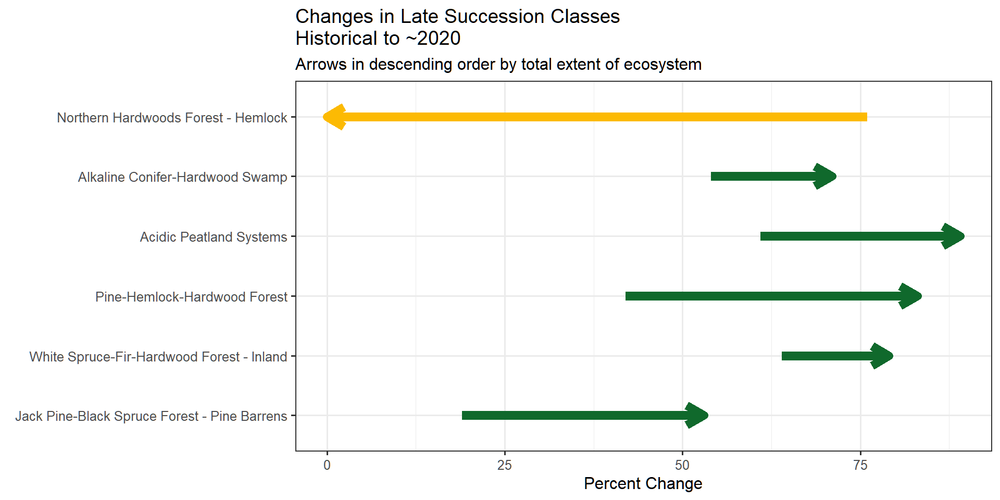
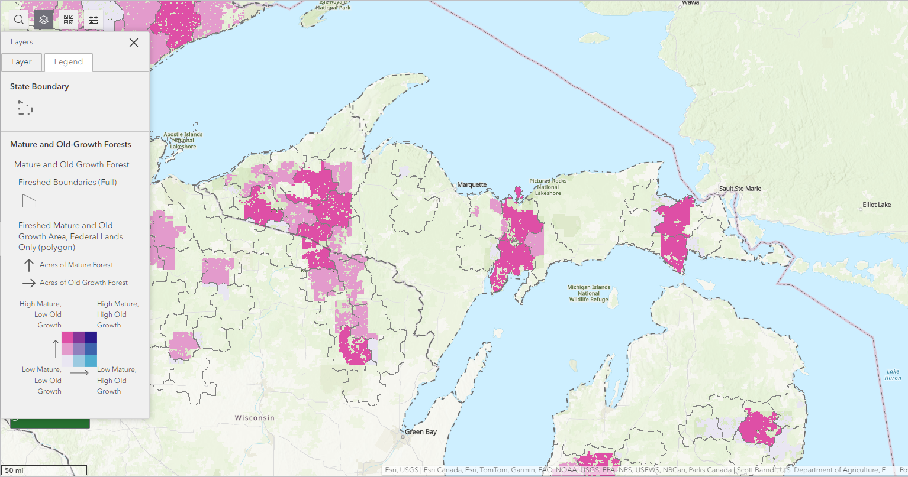
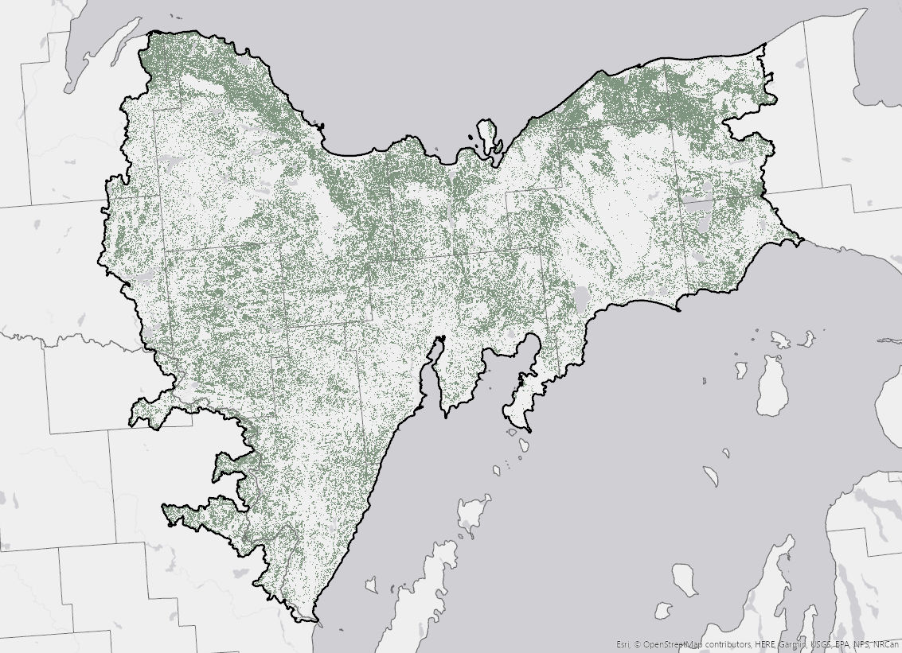

Late Succession Habitat
Background and summary
The Biden Administration has taken significant steps to protect old growth and mature forests in the United States. Their Executive Order ‘Strengthening the Nation’s Forests, Communities, and Local Economies’ mandates the Department of Agriculture and the Department of the Interior to inventory and publicly disclose information about old-growth and mature forests on Federal lands. This initiative has sparked interest among non-profit organizations and local governments, particularly in the Central Upper Peninsula.
Here we explore ‘late-succession’ habitat as defined by LANDFIRE in the Biophysical Settings models and descriptions which is specifically defined for each BpS (historical ecosystem).
Note: late succession does not necessarily equal ‘mature’ or ‘old growth’, and is widely defined for some types.
We found:
- Central Upper Peninsula has substantial ‘late-succession’ habitat.
- Most of this habitat is found in riparian and fire-adapted ecosystems.
- However, there has been a significant loss of late-succession habitat in the ‘Northern Hardwoods Forest - Hemlock’ ecosystem.
- It’s important to note that these habitat definitions primarily consider canopy cover and height, without accounting for biodiversity metrics.
Upland late succession habitat
Riparian late succession habitat

Change in amounts of late succession habitats, past to present

Other datasets
Above we explored “late-succession” habitat, which might be considered to be the ‘top of the funnel’ or widest possible way to look at later stages of ecosystem development. Below we explore some other related datasets currently available.
Mature and Old Growth Data from the US Forest Service (USFS)
To support “Executive Order 14072 (also known as “Strengthening the Nation’s Forests, Communities, and Local Economies”)“, USFS scientists have defined and mapped ‘mature’ and ‘old-growth’ forests on USFS and Bureau of Land Management lands of the US. Their definitions are largely based on relatively reliably mapped characteristics of tree diameter and trees per acre.
At time of this assessment, raw data was not available for further assessment to our knowledge.

For the Central Upper Peninsula area, a few things stand out from their map:
- There are no ‘High Old-Growth’ areas.
- High ‘Mature/Low Old-Growth’ areas are mapped in the eastern portion of the assessment area, largely in line with Pictured Rocks National Lakeshore, and the western area of the Hiawatha National Forest.
We strongly recommend reading the full report, available here, and exploring the data viewer.
Mature and Old-Growth mapping effort by Barnett et al. (2023)
In a recently published paper, Barnett et al. (2023) classified, inventoried and mapped mature and old-growth (MOG) forests for the US. Whereas many MOG mapping attempts use some combination of tree height and/or age and/or density, the authors assessed carbon accumulation, and assumed (briefly) that old-growth occurred:
“…at the age when the density of total forest carbon stored in live and dead biomass reaches 95% of the empirically derived maximum, and the mature forest stage as occurring between the peak average carbon increment and the age of onset of old growth.”
At time of this assessment, raw data was not available for further assessment to our knowledge. However from Figure 8 in the paper a few patterns jump out:
{kind=link}
- Most of the Upper Peninsula is mapped as ‘young’ or ‘mature’.
- There appear to be scattered pixels (small areas) with ‘Old-Growth’ scattered around the area, with no discernible concentrations of old-growth.
Mature and Old-Growth Contributions project by DellaSala et al. (2022)
Authors of this paper used combinations of forest canopy height, cover and above-ground living biomass to map mature and old-growth forests (among many other things). To summarize, the authors held workshops with scientists to develop ‘rulesets’ or thresholds of the three aforementioned parameters for each of 28 forest types groups, then combined the necessary datasets to map mature and old-growth forests.
The authors do share their datasets at https://www.matureforests.org/data. Here’s a quick map of ‘mature’ forest pixels for the analysis area.

This map most closely aligns with ours, identifying a substantial amount of the analysis area as ‘mature’.
Notes on LANDFIRE data
In LANDFIRE, late-succession was not specifically designed for old-growth/mature forest identification. We use LANDFIRE data here because:
- There are robust descriptions and ecological models for each ecosystem that have been peer reviewed. Learn more about the process from Blankenship et al., (2021), and Swaty et al., (2021).
- The datasets and models cover all lands, not just agency lands for example.
- Late succession as defined in the LANDFIRE models and descriptions is ‘highly-inclusive’, and can serve to highlight areas for more detailed field examinations.
- LANDFIRE’s view of ecosystems includes natural disturbances (including Indigenous burning, wildfires, windthrow, etc.), which is in line with current ecological theory. This is particularly important in disturbance-driven ecosystems such as the Northern Pine(-Oak) Forests which would have had frequent surface fires prior to European Settlement. These fires resulted in a fair amount of ’Late-Open” successional habitat.